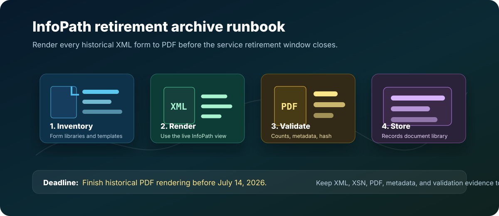

InfoPath Forms Services Deadline: Render XML Forms to PDF
Publishing new InfoPath forms has been blocked since May 18, 2026. On July 14, 2026, Microsoft permanently removes InfoPath Forms Services from SharePoint Online — no browser rendering, no form submissions, no extension option. Render every historical XML form to PDF now.
Admin & AutomationJuly 1, 202616 min read
InfoPath is not just another retired Office client. In many SharePoint tenants, InfoPath still controls how old HR requests, finance approvals, safety checks, legal intakes, and regulated business records are displayed. Publishing new forms has already been blocked by Microsoft since May 18, 2026. The preservation window closes on July 14, 2026. The urgent work is preservation: create a readable PDF copy of every historical XML form while the browser rendering service is still available. After July 14, there is no fallback — the service is gone from SharePoint Online entirely.

Archive pattern for InfoPath retirement: inventory form libraries, render submitted XML records to PDF, validate counts and metadata, then store PDFs in a SharePoint records library.
Complete removal — no extensions: On July 14, 2026, Microsoft permanently removes InfoPath Forms Services from all SharePoint Online tenants, including Government Cloud and Department of Defense environments. After that date, InfoPath forms will not open, render in the browser, or accept submissions. XML files remain stored in SharePoint libraries but cannot be rendered. There is no option to extend the service. Finish PDF rendering, metadata capture, and validation before July 14.
Official Microsoft Details to Know
Microsoft announced the retirement of InfoPath Forms Services in a June 2023 SharePoint Blog post and has since issued Message Center notifications detailing a two-phase removal. Both phases now apply to all tenants — including Government Cloud and Department of Defense — with no option to extend.
Phase 1 — Publishing blocked (already in effect: May 18, 2026)
As of May 18, 2026, Microsoft blocked the ability to publish new InfoPath forms or publish updates to existing InfoPath forms in SharePoint Online. Existing published forms remained functional during this window, but no new templates or changes can be deployed. This phase is now complete.
Phase 2 — Complete service removal (July 14, 2026)
On July 14, 2026, InfoPath Forms Services is permanently removed from SharePoint Online for all tenants. After this date:
InfoPath forms will not open or render in the browser.
Users cannot submit new responses through InfoPath forms.
Form libraries and their XML files remain accessible in SharePoint — files are not deleted — but clicking an XML file will no longer launch the InfoPath browser form.
Users who have InfoPath 2013 installed locally can still download individual XML files and open them in the desktop client, provided the XSN template is also available.
There is no automatic fallback to a native SharePoint form view.
Microsoft will not offer extensions past this date for any tenant.
InfoPath 2013 client end of support
The Microsoft Lifecycle page for InfoPath 2013 confirms that extended support ends July 14, 2026 — the same date as the SharePoint Online service removal. This date was set to align with the SharePoint Server 2016 extended support end date.
The practical interpretation is clear: any submitted XML file that must remain readable for audit, legal, finance, HR, or customer service purposes needs a rendered PDF before July 14. After that date, the rendering engine is gone.
Do not rely on XML alone. XML is the data. The XSN template, rules, views, formatting, repeating sections, and attachment handling are what make the form understandable to a human reader.
What You Need to Preserve
A good archive does not throw away the original source. It keeps the readable copy and the technical source together.
Item
Why it matters
Where to store it
Rendered PDF
The durable, human-readable record for business users, auditors, and records managers.
New SharePoint document library, usually one per site or business process.
Original XML
The submitted data file and source evidence.
Keep in the original library or copy to a protected archive location.
XSN template
The view and rules that make the XML understandable.
Archive library folder named by form template and version.
Attachments
InfoPath attachments may be stored inside XML or referenced by the form process.
Extract or preserve according to your records policy.
Manifest CSV
Maps each PDF back to source site, library, XML file, template, submitter, date, hash, and conversion status.
Same records library, restricted to owners and records admins.
Step 1: Inventory Every InfoPath Form Library
Start with discovery. You need to know which sites have form libraries, which libraries contain XML submissions, and which templates are still active.
1
Run the Microsoft 365 Assessment tool
Use Microsoft's assessment tooling to find InfoPath usage at tenant scale. Treat its output as the starting inventory, then confirm high-risk sites manually.
2
Ask business owners to confirm retention need
Some libraries are abandoned and can follow normal retention cleanup. Others are legal records and must be preserved.
3
Classify forms by risk
Prioritize regulated records, approval histories, employee files, finance submissions, customer commitments, and forms with attachments.
PowerShell starter inventory
This PnP PowerShell snippet gives admins a lightweight way to find likely InfoPath form libraries. Run it in a pilot first, then expand across the tenant.
Create a dedicated library before conversion begins. Do not drop PDFs back into the old form library without structure. You want a clean records destination with columns that make search, audit, and validation easy.
Column
Type
Purpose
OriginalFormUrl
Hyperlink or single line text
Points to the source XML record.
OriginalFileName
Single line text
Preserves the old XML file name.
FormTemplate
Single line text
Names the XSN or business process.
SubmittedBy
Person or single line text
Captures the original submitter when available.
SubmittedDate
Date and time
Supports retention and records lookup.
RenderedOn
Date and time
Shows when the PDF was created.
SourceXmlHash
Single line text
Provides evidence that the archive points to a specific source file.
ConversionStatus
Choice
Values such as Rendered, Failed, Needs Review, Not Required.
This step has been partially enforced for you. Since May 18, 2026, Microsoft has blocked publishing new or updated InfoPath forms in SharePoint Online. No further template changes can be deployed regardless of intent. The remaining tasks in this step are yours to complete:
Publishing is already blocked: Microsoft enforced the publishing freeze on May 18, 2026. Any pending template changes cannot be published. Treat all templates as locked.
Export every template now: download each XSN file and store it with the template name, site URL, library name, version, owner, and export date. This is your last chance to capture templates in context while the service is live.
Redirect active intake: any live business process that still points users to an InfoPath form must be redirected to a modern replacement or a controlled interim method before July 14.
Capture ownership: each form library needs a named business owner who will sign off on archive completeness and confirm the replacement path.
Step 4: Render Every Historical XML Form to PDF
This is the main work. Open each submitted XML form using the same view users would normally see, render it to PDF, and upload the PDF to the archive library with metadata.
There is no universal one-click Microsoft conversion that turns every InfoPath XML file into a perfect PDF across every custom template. Some tenants can automate parts of the job with browser automation, print-to-PDF, or approved third-party records tools. Others need a supervised batch process because old templates include code, custom views, attachments, or data connections.
What breaks on July 14, 2026: Clicking an XML file in a SharePoint form library will no longer open the InfoPath browser form — the rendering service is gone. Forms will not accept new submissions. There is no automatic fallback view. Form libraries remain accessible and XML files are not deleted, but the data inside them is effectively locked behind a format that SharePoint Online can no longer display. The only post-deadline recovery option is to download individual XML files and open them in InfoPath 2013 desktop — a slow, manual, unsupported process. PDF rendering before the deadline is the only scalable preservation path.
Recommended control: convert in batches by library, validate each batch count, and keep failed XML records in a Needs Review queue until a human confirms the reason.
Conversion checklist
Open the form as a user with permission to see all required data.
Select the correct view if the template has multiple views.
Check repeating sections, totals, conditional sections, and attachment areas.
Export or print the rendered form to PDF with a stable file name.
Upload the PDF to the archive library.
Write source URL, original XML file name, rendered date, template name, submitter, and conversion status.
Record failures and retest before July 14, 2026.
InfoPath XML inline attachments are not extracted by PDF conversion. InfoPath stores file attachments as base64-encoded binary data inside the XML — not as separate SharePoint files. The XSLT-to-HTML rendering path and the InfoPath COM print path both render the form view, but neither extracts the embedded attachment payload. If your form libraries contain HR files, safety incident reports, contract approvals, or other records with user-uploaded attachments, you need a separate extraction step after PDF rendering: parse the relevant <xd:xdFileAttachment> nodes (or equivalent custom attachment fields), decode the base64 data with [Convert]::FromBase64String(), and save the extracted files alongside the PDF in the archive library. Add an AttachmentStatus column (Extracted / None / Pending) to the archive library to track this per record.
Download and convert script
This script handles the complete archive run in one pass on a Windows machine: it connects to SharePoint Online, downloads every XML form submission and the XSN template to the desktop, then converts each XML to PDF. Set the configuration variables at the top and run from Windows PowerShell 5.1 or PowerShell 7. If the run is interrupted, set $ResumeFromFolder to the existing output folder name and re-run — XML files already on disk are skipped automatically.
Windows recommended for PDF conversion. Authentication requires an Entra ID app registration with Sites.Read.All permission. Three methods are tried in order: (1) ClientId + certificate thumbprint in the Windows certificate store, (2) ClientId + PFX file, (3) ClientId + Interactive browser sign-in. PDF rendering uses msedge.exe --headless (pre-installed on Windows 10 and 11). InfoPath COM is available as a fallback if Edge or the XSLT path is unavailable.
PowerShell — Download-InfoPathForms-WithPdf.ps1
<#
.SYNOPSIS
Downloads all InfoPath XML form submissions from SharePoint Online and
converts each to a PDF using the form's own XSLT view and Edge headless.
.DESCRIPTION
DOWNLOAD PHASE
- PnP.PowerShell (latest) with certificate or interactive authentication.
- Pages through all items including subfolders (handles >5,000-item libraries).
- Batched downloads, exponential-backoff retries, resumable runs.
- Downloads .xsn template(s) from /Forms.
- Exports FormItems_Metadata.csv with XmlStatus and PdfStatus columns.
PDF CONVERSION PHASE ($ConvertToPdf = $true)
Primary -- Edge headless: extracts view XSLT from XSN Cabinet, transforms
XML -> HTML via .NET XslCompiledTransform, prints with msedge --headless.
Fallback -- InfoPath COM: opens XML in InfoPath Filler 2013, prints to
Microsoft Print to PDF.
AUTHENTICATION — tried in priority order (Auto mode):
1. ClientId + certificate thumbprint (cert in Windows store, app reg required)
2. ClientId + PFX file (file-based cert, app reg required)
3. ClientId + Interactive (browser popup, public client flow required)
Set $AuthMethod to force a specific method.
Output on desktop:
InfoPath_Archive_<timestamp>\
_FormSubmissions_XML\ .xml files (library folder structure mirrored)
_PDFArchive\ rendered .pdf files (same folder structure)
_FormTemplate_XSN\ .xsn template(s)
FormItems_Metadata.csv
README.txt
download.log
.PREREQUISITES
Windows PowerShell 5.1 (recommended) or PowerShell 7.x on Windows.
PnP.PowerShell (latest) -- auto-installed if missing.
Entra ID app registration with Sites.Read.All (or equivalent) permission.
PDF primary : Microsoft Edge (Chromium) -- pre-installed on Windows 10/11.
PDF fallback : Microsoft InfoPath Filler 2013.
Non-Windows : download phase works; PDF and InfoPath COM require Windows.
.AUTHOR
Vipin Sharma (extended by OceanCloud)
#>
# ========================== SITE + LIBRARY =================================
$SiteUrl = "https://contoso.sharepoint.com/sites/your-site"
$LibraryTitle = "Your InfoPath Form Library"
# Leave blank for a new run; paste the prior run's folder name to resume.
$ResumeFromFolder = ""
# ========================== AUTHENTICATION =================================
# $AuthMethod controls which method is attempted.
# "Auto" builds a priority list from the settings below:
# populated Thumbprint -> populated PFX -> Interactive (browser popup).
# Force a single method by setting "Thumbprint", "PFX", or "Interactive".
$AuthMethod = "Auto"
# Required for all methods (Entra ID app / client ID)
$ClientId = "" # e.g. "12345678-aaaa-bbbb-cccc-000000000000"
$TenantId = "" # domain or GUID e.g. "contoso.onmicrosoft.com"
# Method 1 -- Certificate thumbprint (cert installed in Windows certificate store)
# Upload the same certificate's public key to the Entra ID app under Certificates & secrets.
$CertThumbprint = "" # SHA1 thumbprint, no spaces
# Method 2 -- PFX file fallback
$PfxPath = "" # full path to .pfx e.g. "C:\certs\sp-archive.pfx"
$PfxPasswordText = "" # plain-text password; leave blank to be prompted
# Method 3 -- Interactive browser sign-in (fallback)
# Requires the Entra ID app: Authentication -> Allow public client flows = Yes
# and http://localhost listed as a Redirect URI.
# ===========================================================================
# ========================== PDF CONVERSION =================================
$ConvertToPdf = $true # $false = download XML only
$PdfMethod = "Auto" # "Auto" | "Edge" | "InfoPath"
$DeleteHtmlIntermediate = $true # delete temp HTML once PDF is created
$SkipExistingPdfs = $true # skip items that already have a PDF on disk
# ===========================================================================
# ========================== BATCHING / THROTTLE ============================
$BatchSize = 100
$InterBatchPauseSecs = 3
$MaxRetries = 5
$RetryBaseSecs = 5
# ===========================================================================
# ========================== FEATURE TOGGLES ================================
$DownloadTemplate = $true # download .xsn from /Forms (required for Edge PDF)
$ExportMetadata = $true # write FormItems_Metadata.csv
$ResumeMode = $true # skip .xml files already on disk
# ===========================================================================
# ---- Platform warning (not a hard exit -- download works cross-platform) --
$onWindows = ($PSVersionTable.PSVersion.Major -lt 6) -or $IsWindows
if (-not $onWindows) {
Write-Warning "Non-Windows platform detected. Download will proceed; PDF conversion and InfoPath COM fallback require Windows."
}
# ---- TLS 1.2 (Windows PowerShell 5.1 defaults to TLS 1.0/1.1) ------------
try {
[Net.ServicePointManager]::SecurityProtocol =
[Net.ServicePointManager]::SecurityProtocol -bor [Net.SecurityProtocolType]::Tls12
} catch { }
# ---- Resolve output folder -------------------------------------------------
if ([string]::IsNullOrWhiteSpace($ResumeFromFolder)) {
$DesktopFolder = "InfoPath_Archive_$(Get-Date -Format 'yyyyMMdd_HHmmss')"
} else {
$DesktopFolder = $ResumeFromFolder
}
$OutputPath = Join-Path ([Environment]::GetFolderPath('Desktop')) $DesktopFolder
$FormsFolder = Join-Path $OutputPath "_FormSubmissions_XML"
$PdfFolder = Join-Path $OutputPath "_PDFArchive"
$TemplateFolder = Join-Path $OutputPath "_FormTemplate_XSN"
$XsnExtractRoot = Join-Path $OutputPath "_XsnExtracted"
$null = New-Item -ItemType Directory -Path $FormsFolder -Force
if ($ConvertToPdf) { $null = New-Item -ItemType Directory -Path $PdfFolder -Force }
if ($DownloadTemplate) { $null = New-Item -ItemType Directory -Path $TemplateFolder -Force }
# ---- Logger ----------------------------------------------------------------
$LogFile = Join-Path $OutputPath "download.log"
function Write-Log {
param([string]$Message, [string]$Level = "INFO")
$line = "{0} [{1}] {2}" -f (Get-Date -Format "yyyy-MM-dd HH:mm:ss"), $Level, $Message
$color = switch ($Level) { "ERROR" { "Red" } "WARN" { "Yellow" } default { "Cyan" } }
Write-Host $line -ForegroundColor $color
Add-Content -Path $LogFile -Value $line
}
if (-not [string]::IsNullOrWhiteSpace($ResumeFromFolder)) {
Write-Log "RESUME MODE: $OutputPath"
}
# ---- PnP.PowerShell check --------------------------------------------------
$installed = Get-Module -ListAvailable -Name PnP.PowerShell |
Sort-Object Version -Descending | Select-Object -First 1
if (-not $installed) {
Write-Host "PnP.PowerShell not found. Installing latest from PSGallery ..." -ForegroundColor Yellow
try {
Install-Module -Name PnP.PowerShell `
-Scope CurrentUser -Force -AllowClobber -ErrorAction Stop
} catch {
Write-Error "Install failed: $($_.Exception.Message)"
Write-Error "Manual install: Install-Module PnP.PowerShell -Scope CurrentUser"
exit 1
}
$installed = Get-Module -ListAvailable -Name PnP.PowerShell |
Sort-Object Version -Descending | Select-Object -First 1
}
if (-not $installed) { Write-Error "PnP.PowerShell is still unavailable. Aborting."; exit 1 }
Remove-Module PnP.PowerShell -ErrorAction SilentlyContinue
Import-Module PnP.PowerShell -RequiredVersion $installed.Version -ErrorAction Stop
Write-Log "Loaded PnP.PowerShell $($installed.Version)"
# ===========================================================================
# AUTHENTICATION
# ===========================================================================
function Connect-SharePoint {
param([string]$Url)
# Validate required fields for cert / interactive methods
$hasClientId = -not [string]::IsNullOrEmpty($ClientId)
$hasThumbprint = -not [string]::IsNullOrEmpty($CertThumbprint)
$hasPfx = -not [string]::IsNullOrEmpty($PfxPath) -and (Test-Path -LiteralPath $PfxPath)
# Build ordered method list
$methods = [System.Collections.Generic.List[string]]::new()
switch ($AuthMethod) {
"Thumbprint" { $methods.Add("Thumbprint") }
"PFX" { $methods.Add("PFX") }
"Interactive" { $methods.Add("Interactive") }
default { # Auto: add each method that has enough config
if ($hasClientId -and $hasThumbprint) { $methods.Add("Thumbprint") }
if ($hasClientId -and $hasPfx) { $methods.Add("PFX") }
$methods.Add("Interactive") # always last in Auto mode
}
}
if ($methods.Count -eq 0) {
throw "No auth method available. Set ClientId with CertThumbprint, PfxPath, or use Interactive."
}
$lastError = $null
foreach ($m in $methods) {
try {
switch ($m) {
"Thumbprint" {
Write-Log "Auth: ClientId + certificate thumbprint ..."
Connect-PnPOnline -Url $Url `
-ClientId $ClientId `
-Tenant $TenantId `
-Thumbprint $CertThumbprint `
-ErrorAction Stop
}
"PFX" {
Write-Log "Auth: ClientId + PFX file ($PfxPath) ..."
$secPwd = if ([string]::IsNullOrEmpty($PfxPasswordText)) {
Read-Host "PFX password for $PfxPath" -AsSecureString
} else {
ConvertTo-SecureString $PfxPasswordText -AsPlainText -Force
}
Connect-PnPOnline -Url $Url `
-ClientId $ClientId `
-Tenant $TenantId `
-CertificatePath $PfxPath `
-CertificatePassword $secPwd `
-ErrorAction Stop
}
"Interactive" {
if ($hasClientId) {
Write-Log "Auth: Interactive browser sign-in (ClientId $ClientId) ..."
Connect-PnPOnline -Url $Url `
-ClientId $ClientId `
-Interactive `
-ErrorAction Stop
} else {
# No ClientId -- last resort. -UseWebLogin is deprecated in newer PnP
# versions; set $ClientId and use Interactive for reliable auth.
Write-Log "Auth: No ClientId set. Attempting -UseWebLogin (deprecated; set ClientId for reliability)." "WARN"
Connect-PnPOnline -Url $Url -UseWebLogin -ErrorAction Stop
}
}
}
Write-Log "Connected to $Url via $m."
return # success
}
catch {
$lastError = $_
Write-Log "Auth method '$m' failed: $($_.Exception.Message)" "WARN"
# continue to next method
}
}
# All methods exhausted
throw "All authentication methods failed. Last error: $($lastError.Exception.Message)"
}
# ---- Utility helpers -------------------------------------------------------
function Invoke-WithRetry {
param([scriptblock]$ScriptBlock, [string]$Operation = "operation")
for ($i = 1; $i -le $MaxRetries; $i++) {
try { return & $ScriptBlock }
catch {
$msg = $_.Exception.Message
$transient = $msg -match "429|503|throttl|too many|temporarily unavailable|timed out|operation has timed"
if ($i -eq $MaxRetries -or -not $transient) {
Write-Log "$Operation failed: $msg" "ERROR"
throw
}
$wait = [math]::Pow(2, $i) * $RetryBaseSecs
Write-Log "Transient error on $Operation (attempt $i/$MaxRetries). Retrying in ${wait}s..." "WARN"
Start-Sleep -Seconds $wait
}
}
}
function Disconnect-Safe { try { Disconnect-PnPOnline -ErrorAction SilentlyContinue } catch { } }
$invalidFileChars = [System.IO.Path]::GetInvalidFileNameChars()
function Get-SafeFileName {
param([string]$Name)
$safe = $Name
foreach ($c in $invalidFileChars) { $safe = $safe.Replace($c, '_') }
return $safe
}
function Get-RelativeLocalPath {
param([string]$ServerRelativeFileRef, [string]$LibraryRootServerRelative)
if (-not $ServerRelativeFileRef.StartsWith($LibraryRootServerRelative, [StringComparison]::OrdinalIgnoreCase)) {
return (Get-SafeFileName (Split-Path $ServerRelativeFileRef -Leaf))
}
$rel = $ServerRelativeFileRef.Substring($LibraryRootServerRelative.Length).TrimStart('/')
$parts = $rel -split '/'
return ($parts | ForEach-Object { Get-SafeFileName $_ }) -join '\'
}
# ===========================================================================
# PDF CONVERSION FUNCTIONS
# ===========================================================================
function Find-EdgeExecutable {
$candidates = @(
"${env:ProgramFiles(x86)}\Microsoft\Edge\Application\msedge.exe"
"${env:ProgramFiles}\Microsoft\Edge\Application\msedge.exe"
"${env:LOCALAPPDATA}\Microsoft\Edge\Application\msedge.exe"
)
foreach ($c in $candidates) { if (Test-Path $c) { return $c } }
$cmd = Get-Command msedge.exe -ErrorAction SilentlyContinue
if ($cmd) { return $cmd.Source }
return $null
}
function Expand-XsnCabinet {
# XSN files are Windows Cabinet (.cab) archives.
# expand.exe is built into every Windows installation.
# BUG FIX: pass $XsnPath and $OutDir as separate bare arguments so PowerShell
# auto-quotes paths with spaces -- do NOT wrap in embedded "".
param([string]$XsnPath, [string]$OutDir)
$null = New-Item -ItemType Directory -Path $OutDir -Force
$expandExe = Join-Path $env:SystemRoot "System32\expand.exe"
& $expandExe $XsnPath "-F:*" $OutDir 2>&1 | Out-Null
return ($LASTEXITCODE -eq 0)
}
function Get-InfoPathViewXslt {
# Reads manifest.xsf from the extracted XSN to find the default view XSLT.
param([string]$ExtractDir)
$manifestPath = Join-Path $ExtractDir "manifest.xsf"
if (-not (Test-Path $manifestPath)) { return $null }
try {
[xml]$xsf = Get-Content $manifestPath -Raw -Encoding UTF8
$ns = New-Object System.Xml.XmlNamespaceManager($xsf.NameTable)
$ns.AddNamespace("xsf", "http://schemas.microsoft.com/office/infopath/2003/solutionDefinition")
# Prefer the explicitly marked default view; fall back to the first view.
$view = $xsf.SelectSingleNode("//xsf:view[@isDefault='yes']", $ns)
if (-not $view) { $view = $xsf.SelectSingleNode("//xsf:view", $ns) }
if (-not $view) { return $null }
$xsltFile = $view.GetAttribute("transform")
if ([string]::IsNullOrEmpty($xsltFile)) { return $null }
$xsltPath = Join-Path $ExtractDir $xsltFile
if (Test-Path $xsltPath) { return $xsltPath }
return $null
} catch { return $null }
}
function Convert-XmlToHtml {
# Transforms an InfoPath XML submission to HTML using the embedded view XSLT.
# EnableDocumentFunction and EnableScript are required by most InfoPath stylesheets.
param([string]$XmlPath, [string]$XsltPath, [string]$HtmlPath)
$xmlReader = $null
$htmlWriter = $null
try {
$xsltSettings = New-Object System.Xml.Xsl.XsltSettings($true, $true)
$resolver = New-Object System.Xml.XmlUrlResolver
$xslt = New-Object System.Xml.Xsl.XslCompiledTransform
$xslt.Load($XsltPath, $xsltSettings, $resolver)
$xmlCfg = New-Object System.Xml.XmlReaderSettings
$xmlCfg.DtdProcessing = [System.Xml.DtdProcessing]::Ignore
$xmlCfg.XmlResolver = $null
$xmlReader = [System.Xml.XmlReader]::Create($XmlPath, $xmlCfg)
$htmlWriter = New-Object System.IO.StreamWriter($HtmlPath, $false, [System.Text.Encoding]::UTF8)
$xslt.Transform($xmlReader, $null, $htmlWriter)
return $true
} catch { return $false }
finally {
# Always close — prevents file handle leaks when Transform() throws mid-stream.
if ($htmlWriter) { try { $htmlWriter.Close() } catch {} }
if ($xmlReader) { try { $xmlReader.Close() } catch {} }
}
}
function Convert-HtmlToPdfEdge {
# Prints an HTML file to PDF using Microsoft Edge in headless mode.
# [System.Uri] percent-encodes spaces/special chars in the file URI.
# Quoted $PdfPath embeds literal " so Edge sees --print-to-pdf="path with spaces".
#
# REGRESSION: Edge 141+ (Oct 2025) broke --headless=new --print-to-pdf -- Edge
# exits 0 but writes no file. Workaround: add --user-data-dir to force a fresh
# profile (confirmed fix on MS Q&A). --headless=old is tried as a second variant
# for older Edge builds where --user-data-dir alone may not help.
# See: https://learn.microsoft.com/en-us/answers/questions/5579903/
param([string]$HtmlPath, [string]$PdfPath, [string]$EdgeExe)
$tempProfile = $null
try {
$fileUri = [System.Uri]::new([System.IO.Path]::GetFullPath($HtmlPath)).AbsoluteUri
$tempProfile = Join-Path $env:TEMP "EdgeHeadlessProfile_$PID"
$commonFlags = "--disable-gpu --no-pdf-header-footer --disable-extensions " +
"--run-all-compositor-stages-before-draw " +
"--print-to-pdf=`"$PdfPath`" `"$fileUri`""
# Variant 1: headless=new + user-data-dir (fixes Edge 141+ regression)
# Variant 2: headless=old (legacy mode; fallback for older builds)
$variants = @(
"--headless=new --user-data-dir=`"$tempProfile`" $commonFlags",
"--headless=old $commonFlags"
)
foreach ($argLine in $variants) {
if (Test-Path -LiteralPath $PdfPath) { Remove-Item $PdfPath -Force -ErrorAction SilentlyContinue }
$proc = Start-Process -FilePath $EdgeExe -ArgumentList $argLine `
-Wait -PassThru -WindowStyle Hidden -ErrorAction Stop
Start-Sleep -Milliseconds 400
if (($proc.ExitCode -eq 0) -and (Test-Path -LiteralPath $PdfPath) -and
((Get-Item -LiteralPath $PdfPath).Length -gt 512)) {
return $true
}
}
return $false
} catch { return $false }
finally {
if ($tempProfile -and (Test-Path $tempProfile)) {
Remove-Item $tempProfile -Recurse -Force -ErrorAction SilentlyContinue
}
}
}
function Convert-InfoPathXmlToPdfCom {
# Fallback: open in InfoPath 2013 COM and print to Microsoft Print to PDF.
# Uses WScript.Shell SendKeys to dismiss the Save As dialog that
# Microsoft Print to PDF raises -- fragile by nature; test on your environment.
param([string]$XmlPath, [string]$PdfPath)
$ip = $null; $doc = $null; $wsh = $null; $originalPrinter = $null
try {
# Get-CimInstance works on both PS 5.1 and PS 7 (Get-WmiObject removed in PS 7).
$originalPrinter = (Get-CimInstance Win32_Printer -Filter "Default=$true" `
-ErrorAction SilentlyContinue).Name
$pdfPrinter = Get-CimInstance Win32_Printer `
-Filter "Name='Microsoft Print to PDF'" -ErrorAction SilentlyContinue
if (-not $pdfPrinter) {
Write-Log "Microsoft Print to PDF printer not found on this machine." "WARN"
return $false
}
Invoke-CimMethod -InputObject $pdfPrinter -MethodName "SetDefaultPrinter" | Out-Null
$ip = New-Object -ComObject InfoPath.Application
$doc = $ip.XDocuments.Open($XmlPath)
Start-Sleep -Milliseconds 1000
$doc.PrintOut()
Start-Sleep -Milliseconds 1800
# Handle the Save Print Output As dialog via SendKeys.
# BUG FIX: $doc.Close() is called only in finally, not in the try body,
# so the finally block always has a valid reference to release.
$wsh = New-Object -ComObject WScript.Shell
$activated = $wsh.AppActivate("Save Print Output As")
if (-not $activated) { Start-Sleep -Milliseconds 800 } # extra wait if dialog slow
# Escape SendKeys special chars: + ^ % ~ ( ) { } are keyboard-shortcut triggers.
# Wrapping each in {} makes SendKeys type it literally, e.g. {+} sends a + sign.
$escapedPath = $PdfPath -replace '([+^%~(){}])', '{$1}'
$wsh.SendKeys($escapedPath)
Start-Sleep -Milliseconds 400
$wsh.SendKeys("{ENTER}")
Start-Sleep -Milliseconds 2500
return (Test-Path -LiteralPath $PdfPath) -and
((Get-Item -LiteralPath $PdfPath).Length -gt 512)
} catch { return $false }
finally {
# Restore original default printer regardless of outcome.
if ($originalPrinter) {
$restore = Get-CimInstance Win32_Printer `
-Filter "Name='$originalPrinter'" -ErrorAction SilentlyContinue
if ($restore) { Invoke-CimMethod -InputObject $restore -MethodName "SetDefaultPrinter" | Out-Null }
}
# BUG FIX: close doc here (single authoritative close) to avoid double-close.
if ($doc) {
try { $doc.Close($false) } catch {}
try { [System.Runtime.InteropServices.Marshal]::ReleaseComObject($doc) | Out-Null } catch {}
}
if ($wsh) { try { [System.Runtime.InteropServices.Marshal]::ReleaseComObject($wsh) | Out-Null } catch {} }
if ($ip) {
try { $ip.Quit() } catch {}
[System.Runtime.InteropServices.Marshal]::ReleaseComObject($ip) | Out-Null
}
}
}
function Convert-InfoPathXmlToPdf {
param(
[string]$XmlPath, [string]$PdfPath,
[string]$XsnExtractDir, [string]$EdgeExe, [string]$Method
)
$useEdge = ($Method -ne "InfoPath") -and (-not [string]::IsNullOrEmpty($EdgeExe))
$useInfoPath = ($Method -ne "Edge")
if ($useEdge -and (-not [string]::IsNullOrEmpty($XsnExtractDir))) {
$xsltPath = Get-InfoPathViewXslt -ExtractDir $XsnExtractDir
if ($xsltPath) {
$htmlPath = [System.IO.Path]::ChangeExtension($PdfPath, ".html")
if (Convert-XmlToHtml -XmlPath $XmlPath -XsltPath $xsltPath -HtmlPath $htmlPath) {
$ok = Convert-HtmlToPdfEdge -HtmlPath $htmlPath -PdfPath $PdfPath -EdgeExe $EdgeExe
if ($DeleteHtmlIntermediate) { Remove-Item $htmlPath -Force -ErrorAction SilentlyContinue }
if ($ok) { return [pscustomobject]@{ Ok = $true; Method = "Edge+XSLT" } }
Write-Log "Edge conversion failed for $(Split-Path $XmlPath -Leaf) -- trying InfoPath COM..." "WARN"
}
}
}
if ($useInfoPath) {
if (Convert-InfoPathXmlToPdfCom -XmlPath $XmlPath -PdfPath $PdfPath) {
return [pscustomobject]@{ Ok = $true; Method = "InfoPathCOM" }
}
}
return [pscustomobject]@{ Ok = $false; Method = "AllMethodsFailed" }
}
# ===========================================================================
# CONNECT + ENUMERATE
# ===========================================================================
Write-Log "Connecting to $SiteUrl ..."
try {
Connect-SharePoint -Url $SiteUrl
} catch {
Write-Log "Connection failed: $($_.Exception.Message)" "ERROR"
exit 1
}
$library = Invoke-WithRetry -Operation "Get-PnPList '$LibraryTitle'" -ScriptBlock {
Get-PnPList -Identity $LibraryTitle -Includes RootFolder -ErrorAction Stop
}
if (-not $library) {
Write-Log "Library '$LibraryTitle' not found on $SiteUrl." "ERROR"
Disconnect-Safe; exit 1
}
Write-Log "Library: '$($library.Title)' | Items: $($library.ItemCount) | BaseTemplate: $($library.BaseTemplate)"
if ($library.BaseTemplate -ne 115) {
Write-Log "BaseTemplate $($library.BaseTemplate) is not 115 (Form Library). Will still download .xml files." "WARN"
}
$libraryRootUrl = $library.RootFolder.ServerRelativeUrl.TrimEnd('/')
Write-Log "Enumerating items (paged, PageSize=500, includes subfolders) ..."
$allItems = Invoke-WithRetry -Operation "Get-PnPListItem paged" -ScriptBlock {
Get-PnPListItem -List $library -PageSize 500 `
-Fields "FileLeafRef","FileRef","FileDirRef","FSObjType","ID","Created","Modified","Author","Editor","File_x0020_Size"
}
$xmlItems = @($allItems | Where-Object {
($_["FSObjType"] -eq 0) -and ($_["FileLeafRef"] -like "*.xml")
})
Write-Log "Found $($xmlItems.Count) XML form file(s) out of $($allItems.Count) total items."
if ($xmlItems.Count -eq 0) {
Write-Log "No .xml items found in '$LibraryTitle'. Exiting." "WARN"
Disconnect-Safe; exit 0
}
# ===========================================================================
# BUILD ITEM PLAN + SEED METADATA
# ===========================================================================
$itemPlans = @(foreach ($item in $xmlItems) {
$rel = Get-RelativeLocalPath -ServerRelativeFileRef $item["FileRef"] `
-LibraryRootServerRelative $libraryRootUrl
$xmlLocal = Join-Path $FormsFolder $rel
$pdfLocal = Join-Path $PdfFolder ($rel -replace '\.xml$', '.pdf')
[pscustomobject]@{
Item = $item
FileName = $item["FileLeafRef"]
FileRef = $item["FileRef"]
FileDirRef = $item["FileDirRef"]
RelLocal = $rel
LocalXmlPath = $xmlLocal
LocalXmlDir = Split-Path $xmlLocal -Parent
LocalPdfPath = $pdfLocal
LocalPdfDir = Split-Path $pdfLocal -Parent
}
})
$metadata = New-Object System.Collections.Generic.List[object]
$xmlStatus = @{}
$pdfStatus = @{}
foreach ($plan in $itemPlans) {
$createdBy = if ($plan.Item["Author"]) { $plan.Item["Author"].LookupValue } else { "" }
$modifiedBy = if ($plan.Item["Editor"]) { $plan.Item["Editor"].LookupValue } else { "" }
$metadata.Add([pscustomobject]@{
ItemID = $plan.Item.Id
FileName = $plan.FileName
ServerPath = $plan.FileRef
ParentFolder = $plan.FileDirRef
LocalXmlPath = $plan.RelLocal
Created = $plan.Item["Created"]
Modified = $plan.Item["Modified"]
CreatedBy = $createdBy
ModifiedBy = $modifiedBy
SizeBytes = $plan.Item["File_x0020_Size"]
XmlStatus = "Pending"
PdfStatus = "Pending"
})
}
# ===========================================================================
# DOWNLOAD PHASE
# ===========================================================================
$dlSuccess = 0; $dlFailed = 0; $dlSkipped = 0
$total = $itemPlans.Count
$totalBatches = [math]::Ceiling($total / $BatchSize)
$createdDirs = New-Object 'System.Collections.Generic.HashSet[string]' ([System.StringComparer]::OrdinalIgnoreCase)
Write-Log "=== DOWNLOAD PHASE: $total items in $totalBatches batch(es) ==="
$overallStart = Get-Date
for ($b = 0; $b -lt $totalBatches; $b++) {
$s = $b * $BatchSize
$e = [math]::Min($s + $BatchSize - 1, $total - 1)
$batch = @($itemPlans[$s..$e])
$bNum = $b + 1
Write-Log "--- Batch $bNum/$totalBatches (items $($s+1)..$($e+1)) ---"
foreach ($plan in $batch) {
$id = $plan.Item.Id
if (-not $createdDirs.Contains($plan.LocalXmlDir)) {
if (-not (Test-Path -LiteralPath $plan.LocalXmlDir)) {
$null = New-Item -ItemType Directory -Path $plan.LocalXmlDir -Force
}
[void]$createdDirs.Add($plan.LocalXmlDir)
}
if ($ResumeMode -and (Test-Path -LiteralPath $plan.LocalXmlPath)) {
$dlSkipped++
$xmlStatus[$id] = "Skipped (on disk)"
} else {
try {
Invoke-WithRetry -Operation "Download $($plan.RelLocal)" -ScriptBlock {
Get-PnPFile -Url $plan.FileRef -Path $plan.LocalXmlDir `
-FileName (Get-SafeFileName $plan.FileName) -AsFile -Force | Out-Null
}
$dlSuccess++
$xmlStatus[$id] = "Downloaded"
} catch {
$dlFailed++
$xmlStatus[$id] = "FAILED: $($_.Exception.Message)"
}
}
$done = $dlSuccess + $dlSkipped + $dlFailed
Write-Progress -Activity "Downloading XML forms" `
-Status "Batch $bNum/$totalBatches | OK:$dlSuccess Skip:$dlSkipped Fail:$dlFailed | $done/$total" `
-PercentComplete (($done / $total) * 100)
}
Write-Log "Batch $bNum done. Downloaded:$dlSuccess Skipped:$dlSkipped Failed:$dlFailed"
if ($bNum -lt $totalBatches -and $InterBatchPauseSecs -gt 0) {
Write-Log "Pausing ${InterBatchPauseSecs}s ..."
Start-Sleep -Seconds $InterBatchPauseSecs
}
}
Write-Progress -Activity "Downloading XML forms" -Completed
$elapsed = (Get-Date) - $overallStart
Write-Log "Download complete in $([math]::Round($elapsed.TotalMinutes,2)) min."
# ===========================================================================
# DOWNLOAD XSN TEMPLATE(S)
# ===========================================================================
$xsnFiles = @()
if ($DownloadTemplate) {
$formsUrl = "$libraryRootUrl/Forms"
Write-Log "Looking for .xsn template(s) in $formsUrl ..."
try {
$folder = Invoke-WithRetry -Operation "Get-PnPFolder /Forms" -ScriptBlock {
Get-PnPFolder -Url $formsUrl -ErrorAction Stop
}
$folderItems = Invoke-WithRetry -Operation "Get-PnPFolderItem (Forms)" -ScriptBlock {
Get-PnPFolderItem -Identity $folder -ItemType File
}
$xsnFound = @($folderItems | Where-Object { $_.Name -like "*.xsn" })
if ($xsnFound.Count -eq 0) {
# Try the conventional fallback name if enumeration found nothing
try {
Get-PnPFile -Url "$formsUrl/template.xsn" -Path $TemplateFolder `
-FileName "template.xsn" -AsFile -Force | Out-Null
$xsnFiles += (Join-Path $TemplateFolder "template.xsn")
Write-Log "Downloaded fallback template.xsn"
} catch { Write-Log "No .xsn template found in /Forms." "WARN" }
} else {
foreach ($xsn in $xsnFound) {
$safeName = Get-SafeFileName $xsn.Name
try {
Get-PnPFile -Url "$formsUrl/$($xsn.Name)" -Path $TemplateFolder `
-FileName $safeName -AsFile -Force | Out-Null
$xsnFiles += (Join-Path $TemplateFolder $safeName)
Write-Log "Downloaded template: $($xsn.Name)"
} catch {
Write-Log "Could not download $($xsn.Name): $($_.Exception.Message)" "WARN"
}
}
}
} catch { Write-Log "Template lookup failed: $($_.Exception.Message)" "WARN" }
}
Disconnect-Safe
Write-Log "Disconnected from SharePoint."
# ===========================================================================
# PDF CONVERSION PHASE
# ===========================================================================
$pdfSuccess = 0; $pdfFailed = 0; $pdfSkipped = 0
if (-not $ConvertToPdf) {
# BUG FIX: mark all PDF statuses explicitly when phase is skipped
foreach ($plan in $itemPlans) { $pdfStatus[$plan.Item.Id] = "Skipped (ConvertToPdf=false)" }
} else {
Write-Log "=== PDF CONVERSION PHASE ==="
$edgeExe = if ($onWindows) { Find-EdgeExecutable } else { $null }
if ($edgeExe) { Write-Log "Edge found: $edgeExe" }
else { Write-Log "Edge not found. InfoPath COM will be used as fallback." "WARN" }
# Extract the XSN once and reuse for all items in this run
$xsnExtractDir = $null
if (($xsnFiles.Count -gt 0) -and $edgeExe) {
$primaryXsn = $xsnFiles[0]
$xsnLeaf = [System.IO.Path]::GetFileNameWithoutExtension($primaryXsn)
$xsnExtractDir = Join-Path $XsnExtractRoot $xsnLeaf
Write-Log "Extracting XSN Cabinet: $primaryXsn"
if (Expand-XsnCabinet -XsnPath $primaryXsn -OutDir $xsnExtractDir) {
$xsltCheck = Get-InfoPathViewXslt -ExtractDir $xsnExtractDir
if ($xsltCheck) {
Write-Log "View XSLT located: $(Split-Path $xsltCheck -Leaf)"
} else {
Write-Log "View XSLT not found in extracted XSN. Check manifest.xsf manually." "WARN"
$xsnExtractDir = $null
}
} else {
Write-Log "XSN extraction failed. Edge method unavailable; InfoPath COM will be used." "WARN"
$xsnExtractDir = $null
}
}
$pdfDone = 0
foreach ($plan in $itemPlans) {
$id = $plan.Item.Id
# BUG FIX: call Write-Progress for every code path so the bar always advances
if (-not (Test-Path -LiteralPath $plan.LocalXmlPath)) {
$pdfStatus[$id] = "Skipped (XML not on disk)"
$pdfSkipped++
$pdfDone++
Write-Progress -Activity "Converting to PDF" `
-Status "OK:$pdfSuccess Skip:$pdfSkipped Fail:$pdfFailed | $pdfDone/$total" `
-PercentComplete (($pdfDone / $total) * 100)
continue
}
if ($SkipExistingPdfs -and (Test-Path -LiteralPath $plan.LocalPdfPath)) {
$pdfSkipped++
$pdfStatus[$id] = "Skipped (PDF exists)"
$pdfDone++
Write-Progress -Activity "Converting to PDF" `
-Status "OK:$pdfSuccess Skip:$pdfSkipped Fail:$pdfFailed | $pdfDone/$total" `
-PercentComplete (($pdfDone / $total) * 100)
continue
}
if (-not (Test-Path -LiteralPath $plan.LocalPdfDir)) {
$null = New-Item -ItemType Directory -Path $plan.LocalPdfDir -Force
}
$result = Convert-InfoPathXmlToPdf `
-XmlPath $plan.LocalXmlPath `
-PdfPath $plan.LocalPdfPath `
-XsnExtractDir $xsnExtractDir `
-EdgeExe $edgeExe `
-Method $PdfMethod
if ($result.Ok) {
$pdfSuccess++
$pdfStatus[$id] = "PDF:$($result.Method)"
} else {
$pdfFailed++
$pdfStatus[$id] = "PdfFailed"
Write-Log "PDF FAILED: $($plan.RelLocal)" "ERROR"
}
$pdfDone++
Write-Progress -Activity "Converting to PDF" `
-Status "OK:$pdfSuccess Skip:$pdfSkipped Fail:$pdfFailed | $pdfDone/$total" `
-PercentComplete (($pdfDone / $total) * 100)
}
Write-Progress -Activity "Converting to PDF" -Completed
Write-Log "PDF phase done. Success:$pdfSuccess Skipped:$pdfSkipped Failed:$pdfFailed"
# Remove extracted XSN working directory (use root so partial-extraction remnants are also cleaned)
if (Test-Path $XsnExtractRoot) {
Remove-Item $XsnExtractRoot -Recurse -Force -ErrorAction SilentlyContinue
Write-Log "Removed XSN extraction working directory."
}
}
# ===========================================================================
# FINALIZE METADATA CSV
# ===========================================================================
foreach ($row in $metadata) {
if ($xmlStatus.ContainsKey($row.ItemID)) { $row.XmlStatus = $xmlStatus[$row.ItemID] }
if ($pdfStatus.ContainsKey($row.ItemID)) { $row.PdfStatus = $pdfStatus[$row.ItemID] }
}
if ($ExportMetadata -and $metadata.Count -gt 0) {
$csvPath = Join-Path $OutputPath "FormItems_Metadata.csv"
$metadata | Export-Csv -Path $csvPath -NoTypeInformation -Encoding UTF8
Write-Log "Metadata CSV: $csvPath ($($metadata.Count) rows)"
}
# ===========================================================================
# README
# ===========================================================================
$authMethodUsed = $AuthMethod
$pdfSummaryText = if ($ConvertToPdf) {
" Success : $pdfSuccess`n Skipped : $pdfSkipped`n Failed : $pdfFailed (see PdfStatus=PdfFailed rows in CSV)"
} else {
" Skipped (ConvertToPdf was set to `$false)"
}
$readmeContent = @"
InfoPath Form Library Archive with PDF Conversion
==================================================
Source site : $SiteUrl
Source library : $LibraryTitle
Archived on : $(Get-Date -Format 'yyyy-MM-dd HH:mm:ss')
PnP version : $($installed.Version)
Auth method : $authMethodUsed
DOWNLOAD SUMMARY
In scope : $total
Downloaded: $dlSuccess
Skipped : $dlSkipped (resume mode - already on disk)
Failed : $dlFailed (see XmlStatus=FAILED* rows in CSV)
PDF CONVERSION SUMMARY
$pdfSummaryText
FOLDER LAYOUT
_FormSubmissions_XML\ raw .xml form data (library folder structure preserved)
_PDFArchive\ rendered .pdf files (same subfolder structure as XML)
_FormTemplate_XSN\ .xsn template(s) downloaded from the library /Forms folder
FormItems_Metadata.csv one row per item; XmlStatus + PdfStatus columns
download.log full run transcript
HOW PDFs ARE GENERATED
Primary (Edge headless)
1. Expands the XSN Cabinet file to extract the embedded XSLT view stylesheet.
2. Transforms each XML submission to HTML using .NET XslCompiledTransform.
3. Prints HTML to PDF with msedge.exe --headless --print-to-pdf.
Fallback (InfoPath COM)
Opens each XML in Microsoft InfoPath Filler 2013.
Prints to Microsoft Print to PDF.
Requires InfoPath 2013 installed on the machine running this script.
REVIEWING FAILED PDFS
Filter FormItems_Metadata.csv by PdfStatus = PdfFailed.
Common causes: managed code in the XSN, broken data connections,
complex repeating sections, or old XSN versions.
Open those XML files manually in InfoPath 2013 and print to PDF.
RESUMING AN INTERRUPTED RUN
Set `$ResumeFromFolder = '$DesktopFolder' and re-run the script.
XML files already on disk are skipped. PDFs already on disk are skipped
when `$SkipExistingPdfs = `$true.
"@
Set-Content -Path (Join-Path $OutputPath "README.txt") -Value $readmeContent -Encoding UTF8
# ===========================================================================
# FINAL SUMMARY
# ===========================================================================
Write-Log "====================================================="
Write-Log "FINAL SUMMARY"
Write-Log " Library : $LibraryTitle"
Write-Log " XML total : $total"
Write-Log " XML downloaded: $dlSuccess Skipped:$dlSkipped Failed:$dlFailed"
if ($ConvertToPdf) {
Write-Log " PDF success : $pdfSuccess Skipped:$pdfSkipped Failed:$pdfFailed"
}
Write-Log " Output folder : $OutputPath"
Write-Log " Resume cmd : Set `$ResumeFromFolder = '$DesktopFolder'"
Write-Log "====================================================="
Resuming an interrupted run: If the script stops mid-run — network drop, throttling, machine restart — set $ResumeFromFolder to the folder name printed in the final summary (for example "InfoPath_Archive_20260701_142300") and re-run. XML files already on disk are skipped ($ResumeMode = $true), and existing PDFs are skipped when $SkipExistingPdfs = $true. The metadata CSV and log are appended, not overwritten. There is no need to restart from scratch for a partially completed run.
Step 5: Validate Counts, Metadata, and Search
Do not declare success because "the script finished." Records migration needs evidence.
Validation
Pass condition
Count match
Every in-scope XML file has a PDF, or a documented Not Required / Failed status.
Metadata match
PDF library columns map back to source URL, original file name, submitted date, and template.
Open test
Sample PDFs open in browser and download correctly.
Search test
Records team can find PDFs by business key, submitter, date, and process name.
Retention test
Labels and library permissions align with your Microsoft Purview or records policy.
Step 6: Replace Active InfoPath Forms
Archiving solves historical readability. It does not replace active business processes. Use the simplest modern tool that fits the process:
Power Apps: best for SharePoint list forms, conditional screens, richer validation, role-based behavior, and mobile-friendly business apps.
Microsoft Forms: best for simple intake, surveys, questionnaires, and lightweight collection where the form does not need SharePoint-style app logic.
Power Automate: best for routing, approvals, notifications, reminders, integration, and audit logging.
SharePoint lists and libraries: still the right storage layer for many structured business processes after the form front end is modernized.
Migration Priority Matrix
If time is short, start with forms that are both high-risk and hard to reconstruct after retirement.
Priority
Examples
Action before July 14, 2026
Critical
HR case files, legal requests, safety incidents, finance approvals, regulated customer records.
Render all XML to PDF, validate, lock archive permissions, assign owner sign-off.
High
Forms with attachments, code-behind, repeating sections, custom views, or old data connections.
Convert early and maintain a manual review queue.
Medium
Department intake forms with low compliance risk but useful history.
Batch convert and validate by sample plus count reconciliation.
Low
Abandoned test forms, duplicate libraries, empty form libraries.
Confirm with owner, then follow normal retention cleanup.
Official Sources
Use these Microsoft sources when preparing the internal change note or records plan:
OceanCloud can inventory your InfoPath footprint, build the PDF archive library, convert historical form records, validate counts, and rebuild active forms with Power Apps and Power Automate.
Publishing was already blocked by Microsoft on May 18, 2026 — no new or updated forms can be deployed. Before July 14, you need to: render every in-scope historical InfoPath XML form to PDF while the browser rendering service is still live; store the PDFs in a governed SharePoint document library with metadata; export and preserve XSN templates; redirect any active form intake to a modern replacement; and validate that every record has a clear status. After July 14, the rendering service is gone and no catch-up rendering is possible in SharePoint Online.
Usually no. Keep the original XML and XSN template unless your records, legal, and compliance owners approve deletion under a documented retention policy. The PDF is the readable copy; the XML is the original data source.
No. Treat Power Apps as a redesign platform, not a direct InfoPath converter. Simple list forms can often be rebuilt quickly. Complex forms with code, repeating tables, data connections, and multiple views need business analysis and redesign.
Put them in a Needs Review queue with the source URL, template name, error, and owner. Common causes include missing templates, broken data connections, permission issues, deleted lookup data, or old custom code.
Yes, if the records are subject to a retention policy. Apply Microsoft Purview retention labels or library-level governance that matches the business process and legal requirement.
InfoPath stores file attachments as base64-encoded binary data inside the XML file itself — they are not separate SharePoint files. The rendered PDF shows the form view but does not extract the attachment payload. If your archived forms contain inline attachments, you need a separate extraction step after PDF rendering: identify the attachment XML nodes (typically <xd:xdFileAttachment> or equivalent custom fields), decode the base64 content using [Convert]::FromBase64String() in PowerShell, and save the extracted files alongside the PDF in the archive library. Add an AttachmentStatus column (Extracted / None / Pending) to the archive library to track this per record.
No. The July 14, 2026 retirement applies to SharePoint Online only. SharePoint Server 2019 and SharePoint Server Subscription Edition continue to include InfoPath Forms Services for as long as those server versions are supported. If your organization runs InfoPath form libraries on an on-premises SharePoint Server and has not moved those libraries to SharePoint Online, this deadline does not directly apply to those forms. However, InfoPath 2013 desktop client extended support also ends July 14, 2026 regardless of deployment — no further security patches will be issued for the client application after that date. On-premises organizations should still plan a migration to Power Apps or another modern platform on their own timeline.